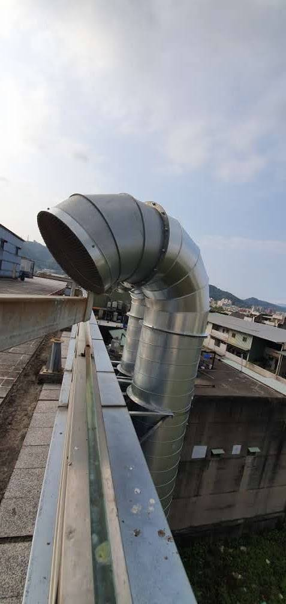

先分清楚：你聽到的是哪一種風機噪音？
葉片與氣流噪音
與葉片通過頻率、風量、風速、入口出口條件有關。
與葉片通過頻率、風量、風速、入口出口條件有關。
馬達與軸承
可能有機械音、電磁音或不平衡振動。
可能有機械音、電磁音或不平衡振動。
風管傳聲
風機聲沿管道傳到出口，彎頭或縮口也可能再產生二次噪音。
風機聲沿管道傳到出口，彎頭或縮口也可能再產生二次噪音。
結構傳振
底座、吊架、管路與鋼構會把振動帶到其他區域。
底座、吊架、管路與鋼構會把振動帶到其他區域。
消音器為什麼不是越長越好？
工程不是只追求「消得越多越好」，而是要在需要的消音量與允許的系統阻力之間取得平衡。消音器太長、通道太窄或內部阻力太大，都可能讓壓損上升、風量下降，最後影響抽風、散熱或製程。
真正有價值的設計問題是：在允許壓損內，怎麼拿到需要的消音量？而不是能不能再做長一點。
設計前至少要知道這 6 件事
1. 風量與設計需求
2. 管徑或風管截面
3. 目前風速
4. 主要噪音頻率
5. 系統可接受壓損
6. 出口方向與受影響位置
2. 管徑或風管截面
3. 目前風速
4. 主要噪音頻率
5. 系統可接受壓損
6. 出口方向與受影響位置
已經有消音器，為什麼出口還是吵？
可能是既有消音器對主要頻率效果不足，也可能是出口距離受音點太近、方向正對住宅，或風速過高產生再生噪音。另一些案件真正的主因是基座或管路傳振，聲音根本不只從出口走。
桃園、新竹工廠常見的限制
廠房空間有限、既有管線密集、不能大幅增加壓損，又希望把鄰界噪音壓下來，常需要把出口轉向、延伸管路、消音器、隔音包覆、軟接與減振一起配置。服務範圍包含桃園、新竹、新北、台北與全台。
延伸閱讀：排風機噪音改善、湖口工廠鼓風機案例、環形鼓風機案例。
常見問題
風機消音器越長越有效嗎？
不一定。長度要搭配頻率、截面、通道、吸音構造、風速與壓損一起設計。
消音器會不會影響製程？
如果壓損過高，可能影響風量與系統工作點，所以設計前必須先確認允許阻力。